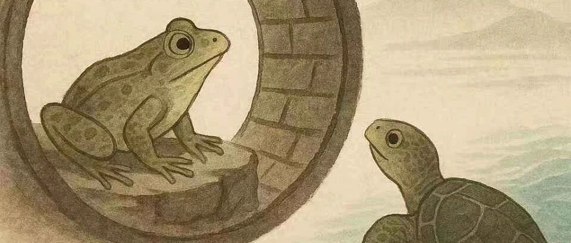
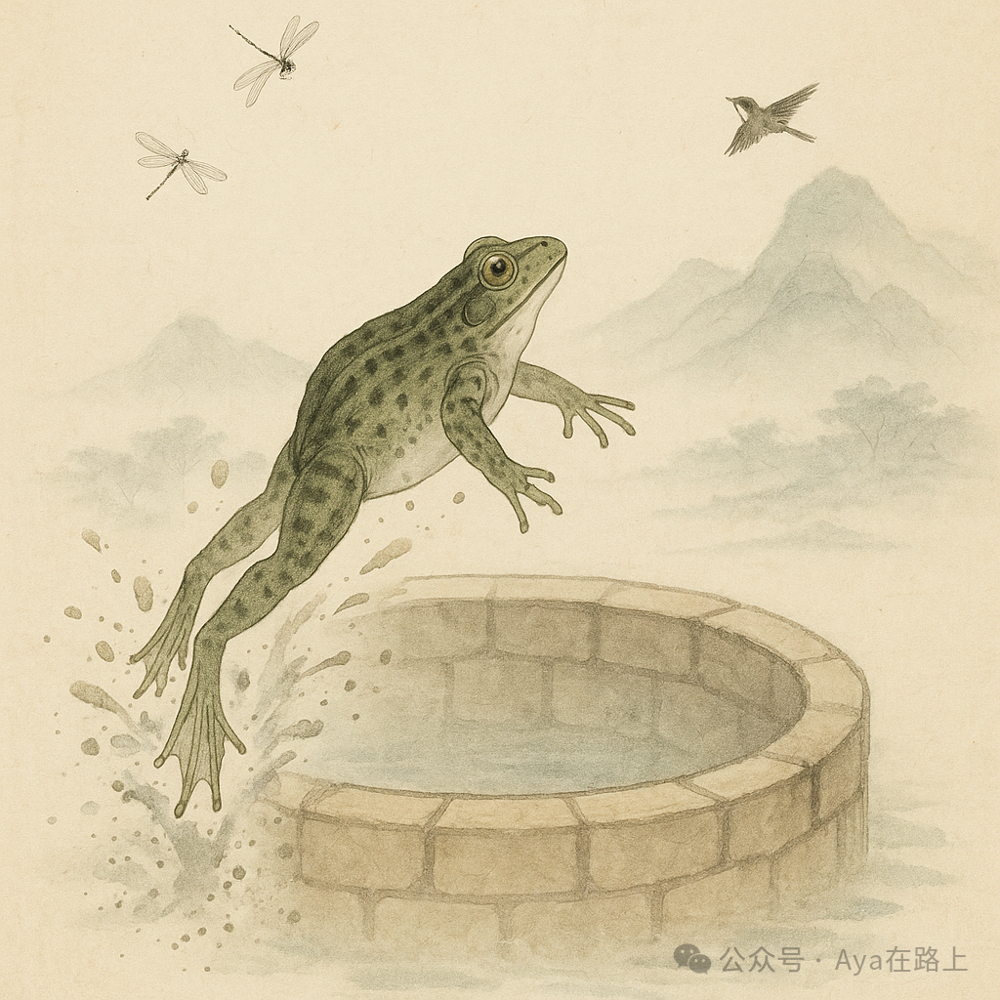

I write and share more on my WeChat Official Account — scan the QR code at the end of the passage to view the original content.

What you perceive as openness
might just be a bigger well.
The frog in Zhuangzi's story never jumped out of the well, yet firmly believed that it owned the whole world.
Today we'll talk about what true "open-mindedness" really means.
Zhuangzi · Autumn Floods — Excerpt"How delightful I am! I leap and bound on the well's edge, and rest on the broken brick cliff. When I plunge into the water, it reaches my armpits and chin; when I wade in the mud, it submerges my feet. Even tadpoles and crabs cannot match me! Moreover, to have the joy of possessing the water of a ravine and the pleasure of sitting on a broken well — this is the ultimate joy. Why don't you come and see for yourself from time to time, Master?"
The sea turtle's left foot hadn't even entered the water when its right knee was already trapped. So it hesitated and retreated, then told the frog:
"A distance of a thousand miles is not enough to describe its vastness; a height of a thousand fathoms is not enough to fathom its depth. In the time of Yu, there were nine floods in ten years, yet the water did not increase; in the time of Tang, there were seven droughts in eight years, yet the cliffs did not diminish. That which does not change with the passage of time, nor advance or retreat with quantity — this is the great joy of the East Ocean."
Upon hearing this, the frog in the well was startled and felt utterly bewildered.
What is the fundamental difference between the frog and the turtle?
The frog lives in its own illusion and is content with its well. The turtle lives in the vast ocean, yet is still willing to try entering a completely new space — even if it doesn't suit him in the end.
We all think we're open-minded, but have you ever considered:
More than two thousand years ago, Zhuangzi used the story of the Frog in the Well to tell us: we should not be complacent, but maintain an open attitude, and be brave enough to explore and try new things.
Without an open mind, one may live their entire life in a "well of cognition," indulging in self-deception.
So, what is the right way to be open-minded?
"The turtle of the East Ocean is willing to try a shallow well. The frog, however, had never been to the sea."
Having curiosity about new things can sometimes lead to unpleasant experiences, but if the risks are managed well, the benefits outweigh the drawbacks.
Before the turtle could step into the well, its knee got stuck — forcing it to hesitate and retreat. But was this attempt fruitful? Of course: it learned that a shallow well wasn't as suitable as the East Ocean. If the frog had been willing to keep trying, perhaps it could have found an environment more suitable than the well.
Humanity continues to explore the stars. Although there are no immediate benefits, perhaps one day our descendants will face a crisis we've never faced before — and will have new choices.
Similarly, in the AI era, we cannot change the enormous transformations AI will bring, but we can at least try to embrace the changes we cannot control.
⟨ 2 ⟩Is what you heard really the truth? Or will you choose the more comfortable version that you trust?
Everyone has their own unique perspective. It's easy to feel comfortable looking at things from your own point of view, but it's not easy to be objective. Critical thinking helps us transcend our own perspectives and look at problems from a higher level, bringing us closer to objective truth.
The frog's idea that shallow wells are comfortable is clearly not applicable to the turtle, yet it still extends an invitation. The frog is unable to reflect on the rationality of its own statement or consider the situation from another's perspective.
Typical manifestations of a lack of critical thinking:
"True thinking is not about accumulating information, but about knowing what to doubt and what questions to ask."
— Carl Sagan
Critical thinking is a skill that combines rationality and openness. It prevents us from being blinded by appearances and gives us the courage to question and the wisdom to judge.
⟨ 3 ⟩"Only those who truly understand others are qualified to express themselves."
Listening and expressing are inseparable; without listening there is no understanding, and therefore no effective dialogue.
After listening to the frog, the turtle tried the shallow well before making its comments about the East Ocean — at which point its words became far more convincing.
However, many adults haven't developed this habit. Expression often becomes a power struggle, and listening is seen as a waste of time. We prefer the other party to directly accept our ideas. We selectively shut down our minds during conversations, refusing to accept the other person's viewpoint and only responding to meet our own needs.
True dialogue only occurs when you listen. The listener is able to set aside preconceived notions and understand the other person's situation, enabling them to make a reasonable response — whether expressing sympathy, offering help, or distancing themselves.
The amount of responsibility you can shoulder determines the amount of freedom you can enjoy. This rule also applies to dialogue.
⟨ 4 ⟩"Only by going out can you realize how shallow your well really is."
The standard for judging whether you are a frog in a well is whether you have stepped out of your comfort zone.
The turtle is willing to visit the bottom of the well, but the frog only wants the turtle to come to it. Perhaps the turtle never quite reached the bottom — the frog thought: "You simply cannot understand my environment!" But how could the frog know the turtle's difficulties?
Many people have a misconception about successful people: they are all opportunists, morally corrupt, their success built on the exploitation of others. But for ordinary people who haven't stepped out of their comfort zones — who haven't grasped the full picture or understood the underlying logic — is it not too arbitrary to make such judgments?

Zhuangzi used the dialogue between the frog and the turtle to reveal a simple yet profound truth: the limitations of our cognition are often not because the world is too small, but because we are too accustomed to the comfort of being at the bottom of a well.
May we all possess awe and curiosity for the unknown world,
and continue to expand the boundaries of our thinking
in an era of information overload and the rise of AI.